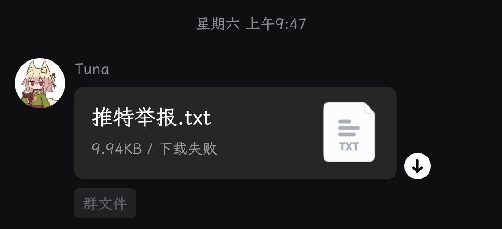
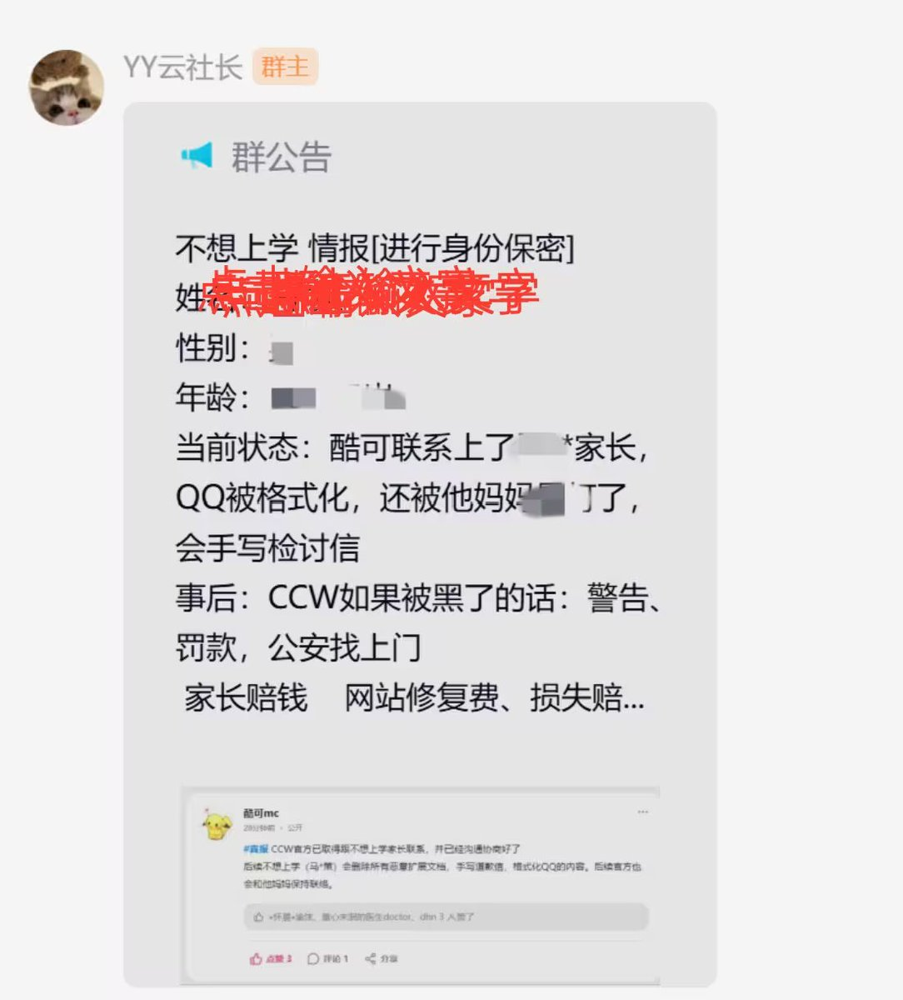
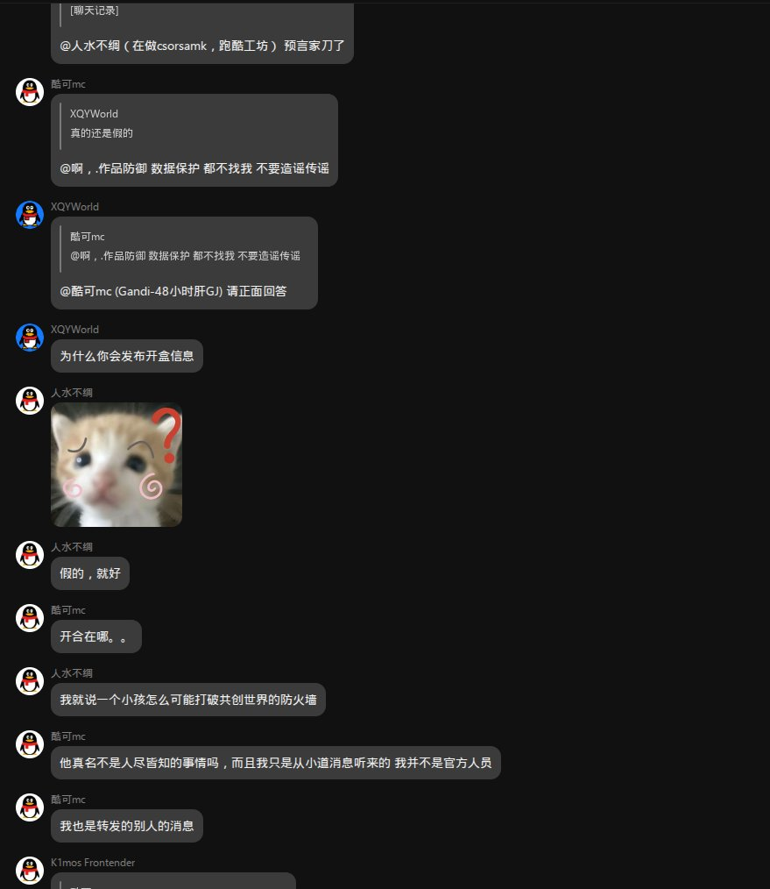
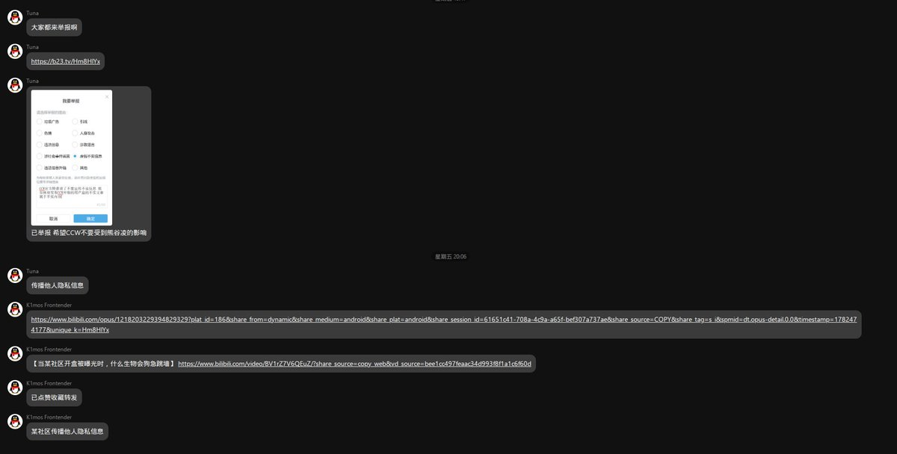
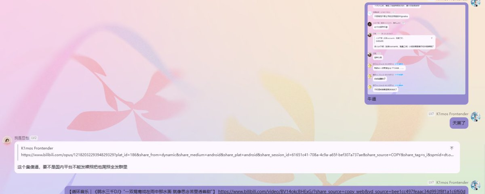

孙悟元 (つ≧▽≦)つ
@wuyuandev
@im_furryr 此外，有人在群聊中传播推特举报模板邮件，怂恿他人对我刷举报。





熊谷凌
@im_furryr
共创世界（Scratch二开儿童编程社区）公关危机：
攻击者因不满官方消极处理安全漏洞实施钓鱼盗号，官方违规调取手机号，联系其家长时致未满14岁当事人隐私信息泄漏扩散，是否涉嫌滥用用户数据存疑，平台隐私管理缺陷暴露；异议者发声后遭组织化举报。
详见：https://t.co/vFajDw0iCI https://t.co/AaqjAjZHZ9